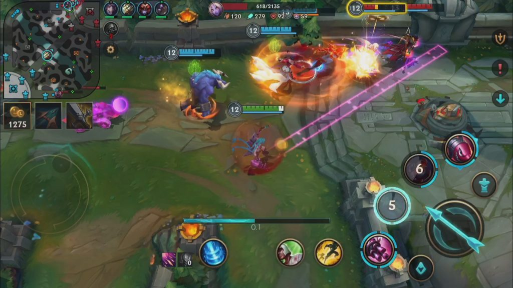
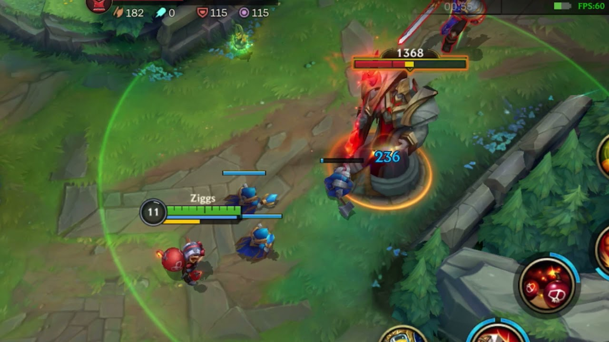

Quienes jugaron League of Legends en PC durante años tuvieron que emprender la laboriosa tarea de acostumbrarse a una versión diferente y hasta extraña del título.
En contraposición, otras tantas personas llegaron a vivir la experiencia del juego de Riot Games por primera vez en sus vidas, probablemente producto de la migración
de otros títulos similares para celular como Mobile Legends.
Si haces parte de cualquiera de esos dos grupos de personas, te explicaremos a continuación todo lo que necesitas saber para iniciar cómodamente a Wild Rift.
¿Cómo instalar Wild Rift?
Lo primero que explicará esta guía de Wild Rift es cómo instalar el juego.
Esto lo puedes hacer desde Google Play Store (en caso de Android) o desde la App Store (en caso de iOS).
Solo búscalo en la tienda e instálalo. Debes ser paciente, porque pesa 3GB.
Después de eso, el juego te pedirá acceder por medio una cuenta de Riot Games, Google o Facebook.
Si no tienes una cuenta de Riot Games, puedes elegir la primera opción y después oprimir en 'Crear cuenta'.
Hecho esto, se te pedirán algunos datos como el correo electrónico para continuar.
Si tienes datos de cualquiera de las tres opciones solo ingrésalos y se te permitirá jugar.
Primeros pasos en Wild Rift
Riot Games se empeñó en que League of Legends para celulares fuera una
experiencia más sencilla para los primerizos en el juego.
Debido a eso, creó un total de nueve tutoriales diseñados para enseñar los conceptos básicos de Wild Rift.
La primera vez que entras al juego este te obligará a terminar el tutorial básico.
Sin embargo, después de esto serás tú el que deberá buscar los demás escenarios.
Esto es sencillo, pues desde el menú principal solo deberás oprimir en 'Jugar',
después ir a la pestaña de 'Entrenamiento' y entrar a la sección de tutoriales.
Terminarlos todos valdrá la pena, pues recibirás recompensas y el conocimiento básico
para jugar.
¿Cuál es el objetivo de las partidas?
Al igual que en cualquier título de este género, en cada partida habrá dos equipos rivales de cinco jugadores
cada uno. Los dos equipos deberán defender una base propia mientras tratan de destruir la base del equipo enemigo.
El objetivo principal es una estructura central llamada el Nexo; si cualquiera de los dos Nexos es destruido, la partida llegará a su fin
y se le dará la victoria al equipo que lo haya derrumbado.
Para lograr esto en Wild Rift, cada jugador deberá elegir un campeón que usará por toda la partida.
Un campeón es un personaje con unas habilidades únicas y que puede recolectar experiencia y oro para hacerse más fuerte.
Esto se logra derrotando criaturas enemigas débiles conocidas como súbditos. La idea de esto es que sea capaz de derrotar a los campeones enemigos
para que dejen desprotegida su base y así poder destruirla.
Las bases están conectadas por tres caminos conocidos como carriles. Aquí hay estructuras defensivas que hay que destruir antes de llegar al Nexo.
Los jugadores deben cubrir todos estos carriles y luchar contra los campeones enemigos mientras tratan de fortalecerse.

¿Cómo funcionan las torres?
Las torres son estructuras defensivas que se encuentran a lo largo de los carriles.
Estas impiden que los súbditos y los campeones enemigos lleguen a hacerle daño al Nexo.
Por lo tanto, es fundamental destruirlas (al menos todas las de un carril) para acabar
eventualmente el juego.
Las torres disparan a todos los objetivos enemigos que se encuentren a su alcance.
Estas golpean muy fuerte y ni siquiera un campeón es capaz de sobrevivir varios tiros
seguidos, al menos al inicio de la partida.
Lo importante es no caminar hacia la zona de ataque de una torre enemiga sin necesidad de hacerlo.
Para que un campeón pueda hacerle daño a una torre enemiga y destruirla,
debe matar a los súbditos enemigos y hacer que sus súbditos avancen y se estrellen
contra la torre. De esta forma, la torre disparará a los súbditos,
lo que permite que el campeón pueda entrar a su zona sin ningún problema.
La torre no disparará al campeón hasta que mueran todos los súbditos o
hasta que el personaje golpee a un campeón aliado dentro de esta zona.
Si haces esto, la torre te atacará inmediatamente.

¿Qué campeón debo escoger en Wild Rift?
¿Qué otras diferencias debo tener en cuenta en Wild Rift?
A continuación podrás ver otras particularidades que deberás tener en cuenta en este título para móviles:
Las compras de la tienda están automatizadas. Tu campeón requiere objetos para hacerse más fuerte, y deberás canjearlos por oro cada vez que vuelvas a la tienda.
Afortunadamente te saldrá una sugerencia en la parte izquierda de la pantalla y tocarla hará que la compres inmediatamente.
También puedes ignorar la sugerencia y buscar otros objetos por ti mismo oprimiendo en el contador del oro que tienes justo al lado.
No hay inhibidores y el Nexo se defiende. La última torre de un carril produce supersúbditos cuando cae. El Nexo actúa como otra torre y dispara a los enemigos cercanos,
aunque no deja de ser frágil cuando se le golpea junto a una oleada de súbditos.
Los robots pelean por ti. Si se te cae el internet, un robot jugará por ti hasta que vuelvas. Su inteligencia artificial los hace muy efectivos cuando toman las riendas
de tu personaje, pero Riot Games te podrá castigar con un bloqueo temporal para el ingreso a partidas desde la primera vez que tengas un fallo de conexión.